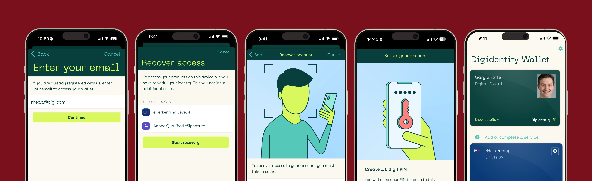
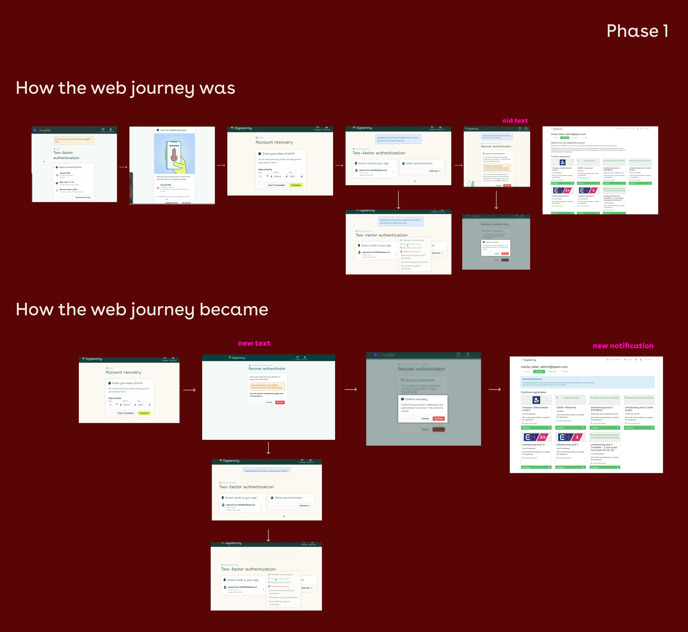
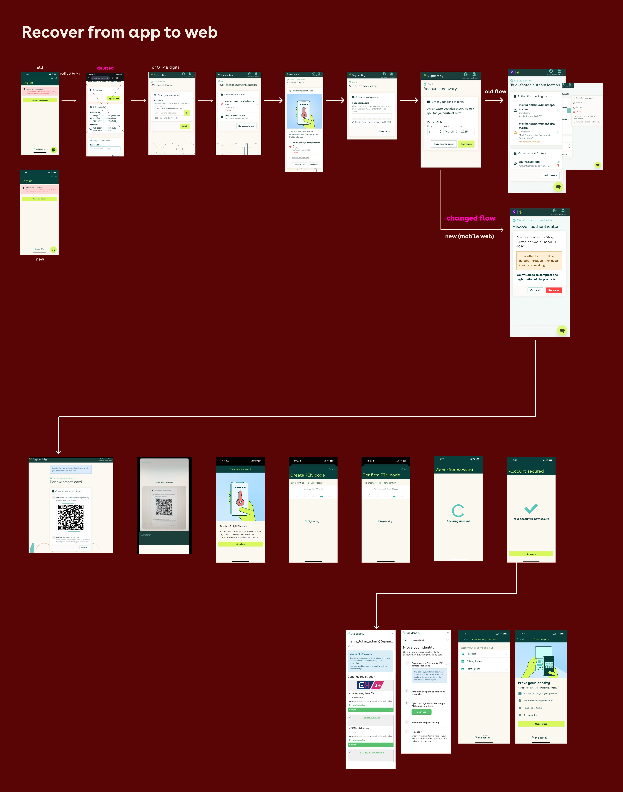
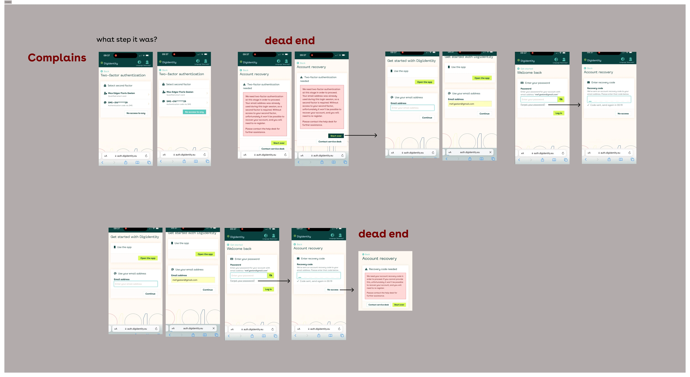
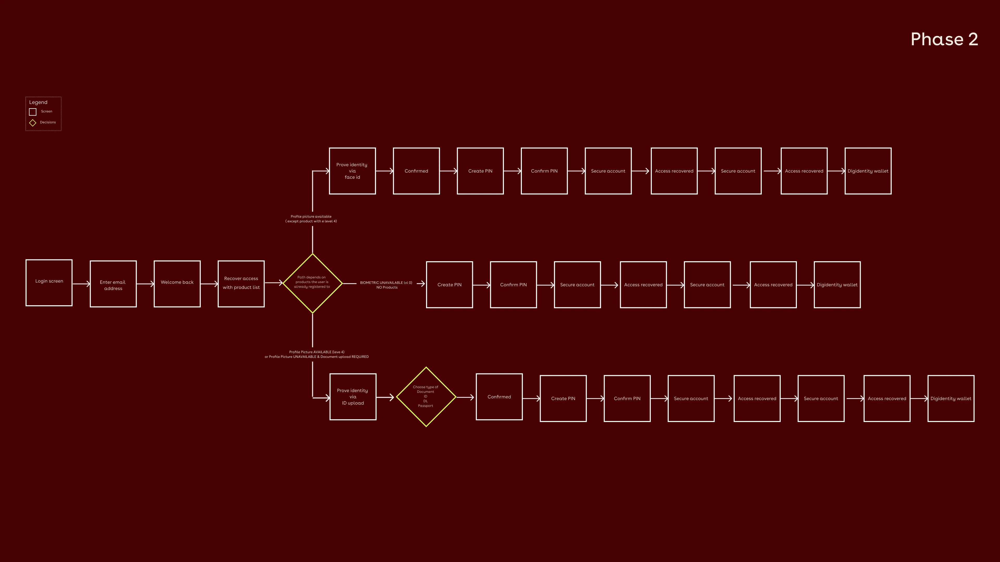
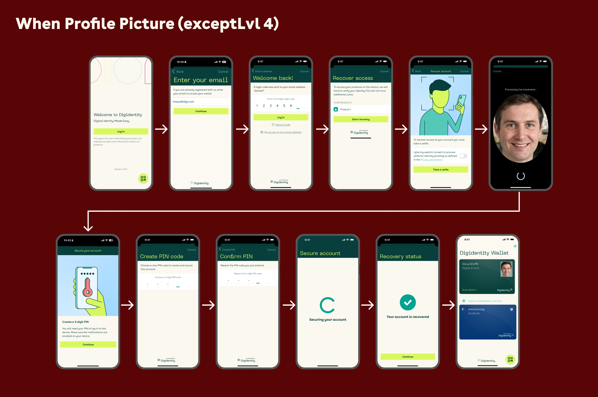
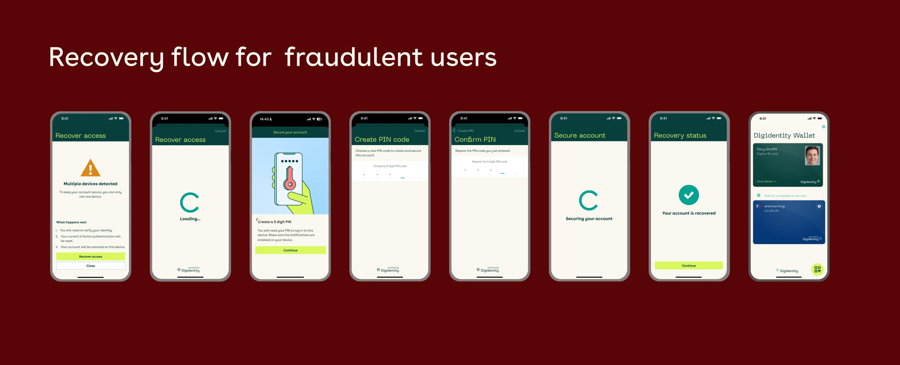
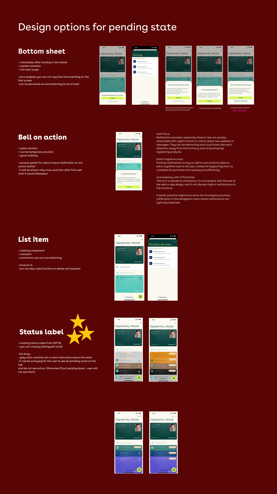
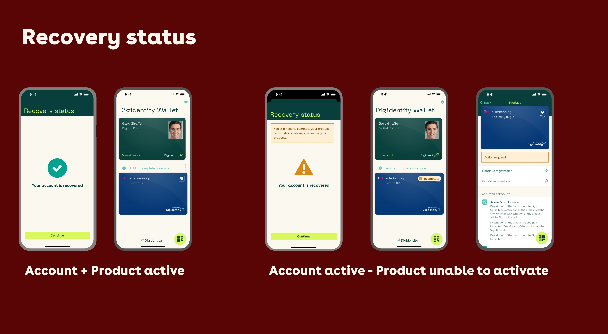

Role
Lead Product Designer
Sole designer
Sole designer
I redesigned Digidentity's account recovery — the flow people hit at their most vulnerable moment with the product — from a fragmented, web-only experience full of dead ends into a self-serve native mobile journey that works across 8 languages.
Context: Digidentity is an eIDAS Qualified Trust Service Provider on the EU Trusted List, whose platform has created 25M+ verified identities across 180+ nationalities.

Users who lost their device or got locked out faced a recovery experience that was web-only, fragmented, and full of dead ends, pushing most of them to the service desk. For a product handling legally binding credentials like eHerkenning and qualified signatures, a broken recovery flow doesn't just frustrate users; it erodes trust in the entire platform.
The result: recovery was neither self-serve nor scalable. The service desk had become the de facto recovery mechanism.
Individuals and business users across EU markets who hold legally binding credentials — eHerkenning, qualified electronic signatures, the EU Digital Identity Wallet — that they rely on for business operations, legal signatures, and government interactions. For these users a locked account isn't an inconvenience; it can block them from signing contracts, filing taxes, or accessing regulated services.
The existing experience spanned four separate flows: web account creation, web password recovery, web recovery with no device access, and a parallel mobile journey. The longest path required 20+ screens and bounced users between web and mobile via QR codes. The forgot-password flow had dead ends where users with a wrong or forgotten email simply had nowhere to go.



Rather than make users wait months for a big-bang release, I sequenced the work to match development capacity, delivering an immediate improvement while the right long-term solution was built properly.
Fixed broken links, removed dead ends, and streamlined sequencing on the existing web recovery. A lighter lift for engineering that gave users an immediate improvement.
Moved recovery to a fully native mobile flow — no more web handoffs — and consolidated "Recovery" and "Transfer" into a single entry point as part of the move.
The hardest part wasn't the visible flow: it was the rules underneath it. The distinction between when biometric verification was required versus when an ID-document upload was sufficient only became clear after several rounds of iteration with the security team.
Once I understood the assurance rules properly, the design stopped trying to force one universal flow and instead routed each user down the correct path for their credential level. The lesson I carry forward: in regulated products, pin down the compliance logic before designing the screens, not during.


A fully native recovery experience covering three happy paths plus the corner cases that matter most: invitation + recovery, sign/login + recovery (handled inline via push notification, returning users to their original task), and suspected fraud, where the user sees a clear "unusual activity" explanation and is guided through identity verification and a new PIN, with no dead ends.
When profile picture available (except smartcard Lvl 4): selfie route
Profile picture available (Smart 4) or profile picture unavailable: document upload required

Users who attempt recovery too many times are redirected to the service desk with a clear message: an intentional escalation, not a dead end. Failure states were redesigned to explain what happened and offer a next step, rather than showing an error icon and stopping.


Built on Digidentity's native component library for consistency across the app: the recovery screens share the same visual language as the rest of the product. Every screen has a clear hierarchy so users always know what's happening, why, and what to do next, and all copy was written short and modular to localise cleanly across 8 languages.
Before this project, recovery had no self-serve path at all: every case went through the service desk. The phased rollout changed that in two steps: stabilising the web flow first lifted self-serve success to 40%, limited because most users are mobile-first and the fix hadn't reached them yet. Moving to a fully native mobile flow then pushed it to 99%, both figures confirmed directly by the service desk team. Recovery now resolves independently for the vast majority of users, across iOS and Android.
I'd involve engineering earlier in the mobile phase: some technical constraints surfaced late. And I'd lock the smart-card assurance and authorisation requirements with the security team up front; getting that clarity earlier would have saved significant rework and reached the right solution faster.
A cross-functional effort across the team. I credit each partner by role: